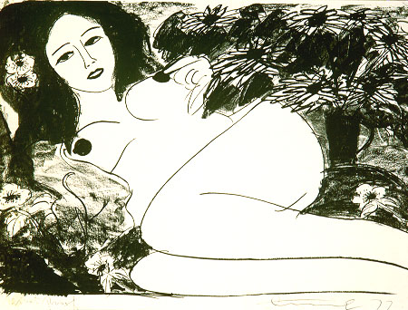

義助慰安婦 —— 李敖百件珍藏義賣藝術品（第60件） 品 名：E10. 丁雄泉「裸女」 預估價：12 萬 成交價：13 萬 說 明： 旅美名畫家丁雄泉先生一九七七年的畫作，由高新疆先生送給李敖。丁雄泉先生是享譽國際的畫家，歐、美、香港各地均有其畫作的展示（一九五○到一九八○年的美國畫冊中，收錄其一九八○年所畫的美女圖）；因專畫美女，故又名「採花大盜」。丁先生畫齡悠久，十四歲時即在上海街頭作畫。這幅畫為素描畫作，可看出其技法的洗練。 
旅美名畫家丁雄泉先生一九七七年的畫作，由高新疆先生送給李敖。丁雄泉先生是享譽國際的畫家，歐、美、香港各地均有其畫作的展示（一九五○到一九八○年的美國畫冊中，收錄其一九八○年所畫的美女圖）；因專畫美女，故又名「採花大盜」。丁先生畫齡悠久，十四歲時即在上海街頭作畫。這幅畫為素描畫作，可看出其技法的洗練。